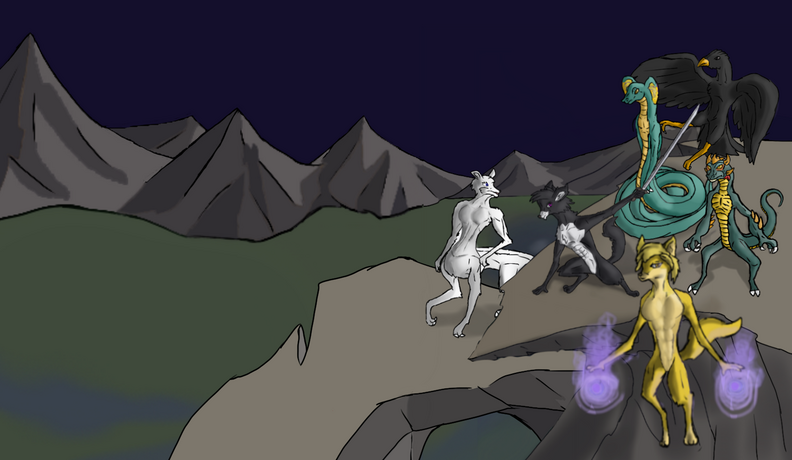
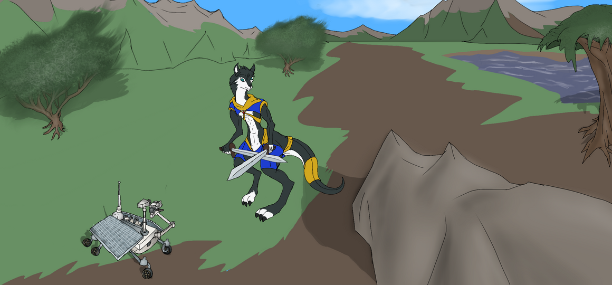
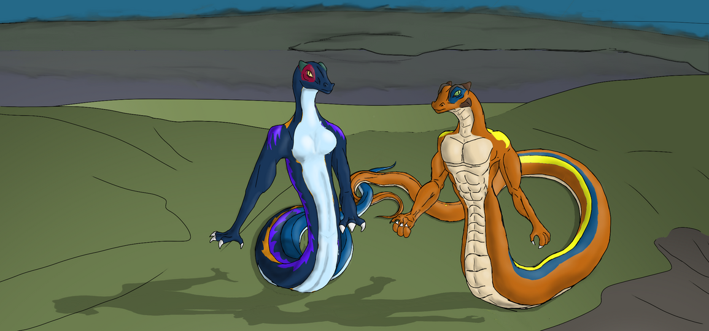
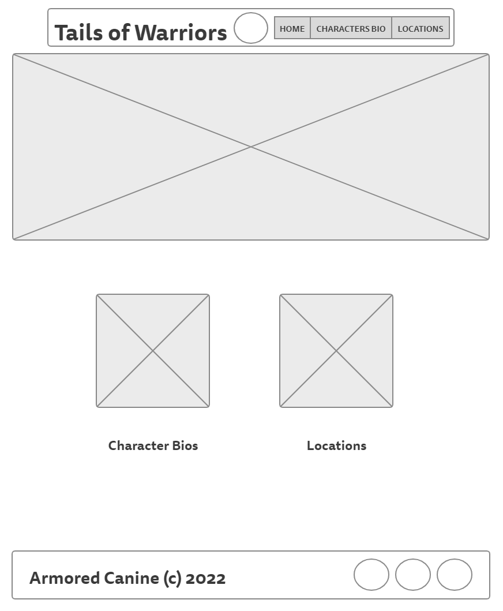
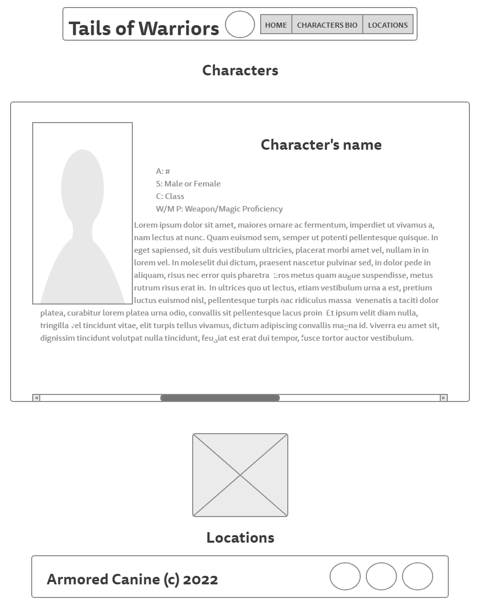
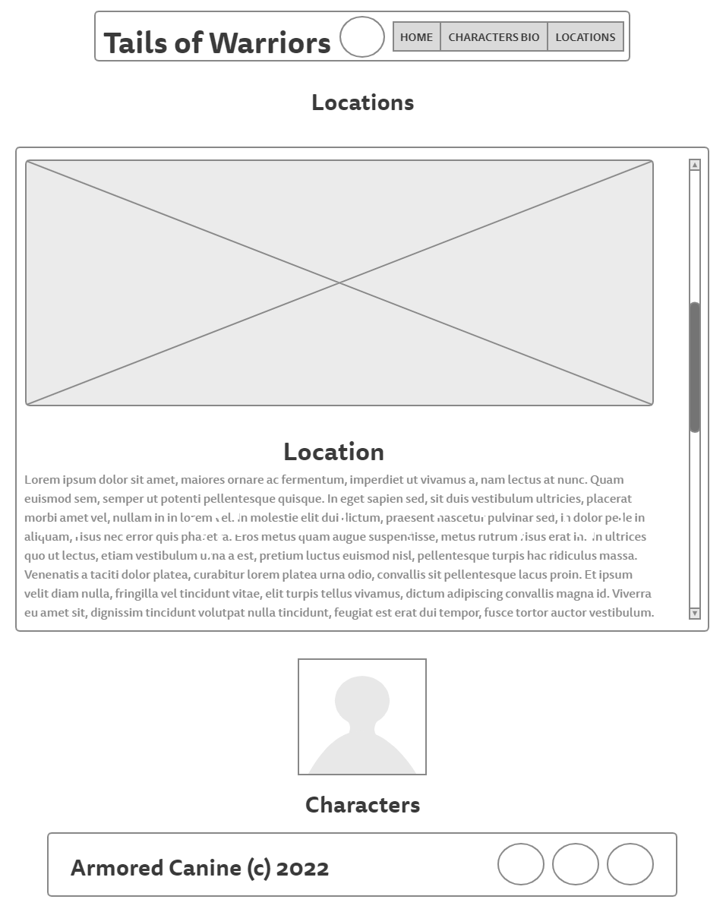

Overview
Purpose
This site would showcase some concepts and ideas of an indie game series of a semi open world gerne. It would include some artwork and what may appear in this game. The website would also include some bios and backstory on characters. The page would explain the story of this GAME series which would be called "Tails of Warriors". The story take place on a planet with anthropomorphic animal set in a medieval world where at first some adventures go on quest, but soon will have an eventual knights vs. aliens development, but the aliens are humans colonizing different planets. Like in the movie Avatar.
Audience
Gamers who are into open world games and stories with anthropomorphic animals. Any gamers.
Branding
Website Logo

Style Guide
Color Palette
Palette URL: https://coolors.co/0E060A-232938-600000-E5E6EE-E3E5E6| Primary | Secondary | Accent 1 | Accent 2 |
|---|---|---|---|
| [#0E060A] | [#232938] | [#E3E5E6] | [#E5E6EE] |
Typography
Heading Font: IM Fell French Canon SC, MedievalSharp, seri
Paragraph Font: Lato, Helvetica, sans-serif
Normal paragraph example
Main Questline: Main Questline: On another world a planet Manareth a world with anthropomorphic animals and nonanthropomorphic animals, there are three fractions, one called Monarchic Council who seeks to takeover Veariaum (Vear-e-a-um) and every providence around it through deceit, manipulation, beguiling specious and pinning species against each other or force if they cannot lie to grab power. Free Order sets to defend the providences from the conquest of the Monarchic Council and stop their deceptions having hold over them and confront the overarching entity as well as confront the Wildbringers. Wildbringers, an anti civilization organization who seeks bring down and collapse all the other fractions and civilization on Manareth into nonexistence and return all into ways of the wild, eliminating all concepts of civilization at all and force everyone into living as nonanthropomorphic animals, sending all into a world of survival of the fittest exactly as such in the wilds.
The Wildbringers views are that cause of the hardships, conflicts and suffrage are cause by people living the wilds for civilization and seeks to bring it down and sends everything into the Ways of the Wilds and natural selections. So, that anthropomorphic animals would become just as the same nonanthropomorphic animals and their ultimate goal that over generations of forbidding civilization that the line between the animals would become nonextant. And they plan that this would integrate vicious repulsion against any glimpse against anything that would lead to return any form of civilization whatsoever, the Wildbringers are even against hut dwellings.
Colored paragraph example
Outworlders Questline: While on a journey traveling through the wilderness in the providence of Veariaum (Vear-e-a-um) one of the adventures, that was quest mentioned previously, had a random encounter with a bizarre automaton that does not look like any design of any civilization or nation this adventurer has ever seen. This is very curious to the adventure, so they escort or took it to an automaton expert, a raven named Huginn, who researches and design automatons to figure out this origins of machine and who designed it. This was a second time an automaton of unknown origin such as this one that was brought to him. Unbeknownst to the adventure that the automaton has a purpose to observe this land, their world, their planet, Manareth from another as anything its sees would be seen by those sent it, who are surprised that this planet is inhabited, by as one of their members referred to them, “medieval, middle age era furries” no less. The Outworlders, as the Manarethlings would soon referred to them, later would send colony and settlers to Manareth. The outcome of the inhabitants and Outworlds would vary based on choices of the adventurers, ranging from forming a treaty after battles or preventive, allowing them to have settlers and lands like the others around them, the Outworlders being subjects to one of the providence, Outworlders being completely friendly through negotiation or hostile, requiring strategy to defeat them.
Navigation
Site Map
Content
Home page
Concepts of the storylines and themes of Tails of Warriors are described on this page.
Images for the Home page
 Charater Bio
Describes the background and bios of the Characters in this game and their relations with each other. Showing the conceptional designs of them and primary equipments.
Images for the Page 2

Locations
Showcase locations such as cities, forests, vallies, mointains ranges and prominent landmarks of these areas that will appear in this games.
Images for the Page 3


Wireframes
Create three wireframes for your site. One for each page and list them here
Home
Where the large image is is also where the headline is placed.
Charater Bio
On this page there will be addtional small window that you can scroll through horizonally and learn about them and backstory.
Locations
Like with character bios, there will be addtional small window that you can scroll through, but vertically and view differnt locatios and lore.
